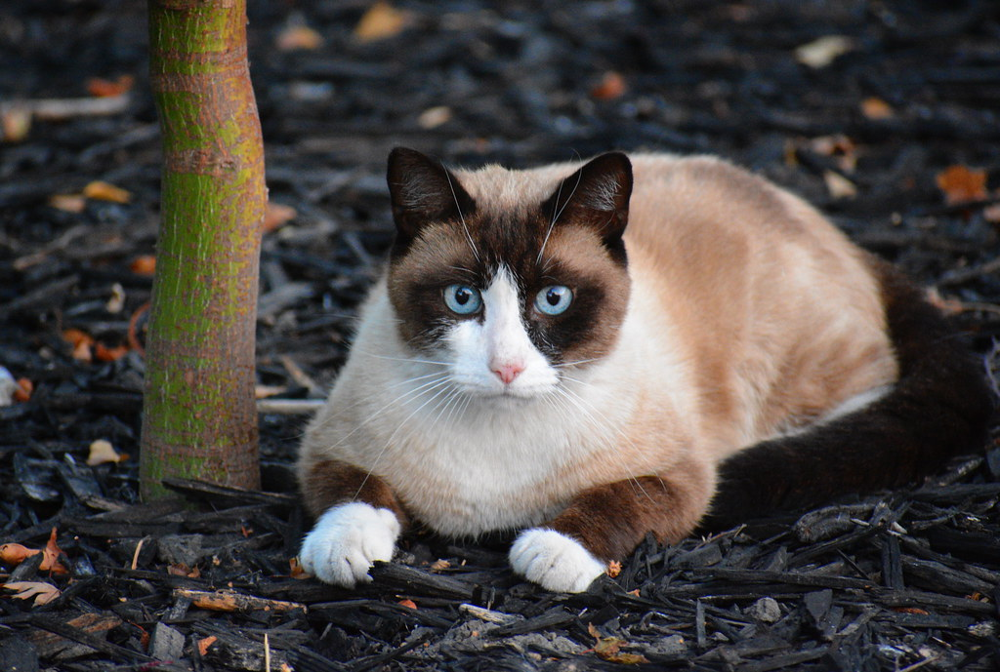

The Snowshoe cat is a shorthair cat with a very unique appearance. They are highly intelligent and have a very contrasting coat with darker colors against white. They vocalize plenty and have very soft and melodic voices. They are very social and lover interactions with people and affection from them. They were named 'Snowshoe' because of their distinct white paws that looks kind of like snow.
